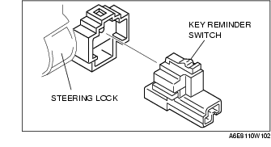

Key reminder switch removal/installation
1. Disconnect the negative battery cable.
2. Remove the column cover. (See COLUMN COVER REMOVAL/INSTALLATION.)
3. Disconnect the key reminder switch connector.
4. Remove the key reminder switch.

5. Install in the reverse order of removal.